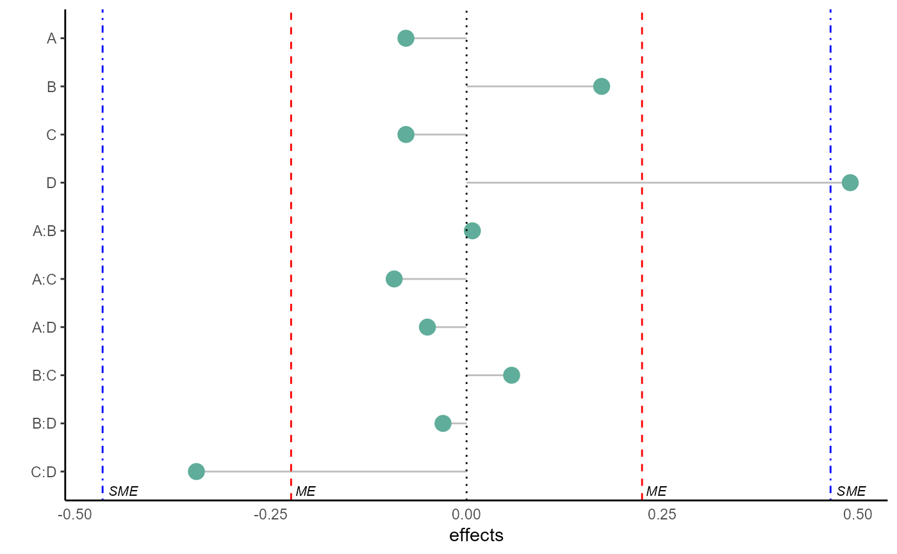
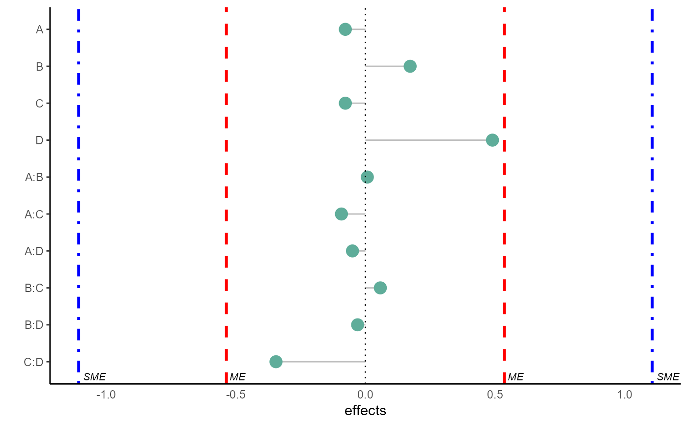

R/Lenth_method.R
Lenth_method.RdLenth’s method: testing effect significance for experiments without variance estimates
Lenth_method(mod, alpha = 0.05)
| mod | A linear model |
|---|---|
| alpha | specify the significance level. Default is alpha=0.05 |
PSE,ME,SME using Lenth's method. Also returns a plot visualizing any factor which is significant using the obtained values of ME, and SME.
#> $results #> # A tibble: 1 x 4 #> alpha PSE ME SME #> <dbl> <dbl> <dbl> <dbl> #> 1 0.05 0.101 0.305 0.666 #> #> $margins_dat #> # A tibble: 10 x 6 #> coeff estimates lower_ME upper_ME lower_SME upper_SME #> <fct> <dbl> <dbl> <dbl> <dbl> <dbl> #> 1 A -0.0775 -0.382 0.227 -0.743 0.588 #> 2 B 0.173 -0.132 0.477 -0.493 0.838 #> 3 C -0.0774 -0.382 0.227 -0.743 0.588 #> 4 D 0.490 0.185 0.795 -0.176 1.16 #> 5 A:B 0.00742 -0.297 0.312 -0.658 0.673 #> 6 A:C -0.0925 -0.397 0.212 -0.758 0.573 #> 7 A:D -0.0500 -0.355 0.255 -0.716 0.616 #> 8 B:C 0.0575 -0.247 0.362 -0.608 0.723 #> 9 B:D -0.0301 -0.335 0.275 -0.696 0.636 #> 10 C:D -0.345 -0.650 -0.0404 -1.01 0.321 #> #> $plot#>Lenth_method(m1,alpha=0.01)#> $results #> # A tibble: 1 x 4 #> alpha PSE ME SME #> <dbl> <dbl> <dbl> <dbl> #> 1 0.01 0.101 0.536 1.11 #> #> $margins_dat #> # A tibble: 10 x 6 #> coeff estimates lower_ME upper_ME lower_SME upper_SME #> <fct> <dbl> <dbl> <dbl> <dbl> <dbl> #> 1 A -0.0775 -0.614 0.459 -1.18 1.03 #> 2 B 0.173 -0.364 0.709 -0.933 1.28 #> 3 C -0.0774 -0.614 0.459 -1.18 1.03 #> 4 D 0.490 -0.0462 1.03 -0.616 1.60 #> 5 A:B 0.00742 -0.529 0.544 -1.10 1.11 #> 6 A:C -0.0925 -0.629 0.444 -1.20 1.01 #> 7 A:D -0.0500 -0.586 0.486 -1.16 1.06 #> 8 B:C 0.0575 -0.479 0.594 -1.05 1.16 #> 9 B:D -0.0301 -0.566 0.506 -1.14 1.08 #> 10 C:D -0.345 -0.881 0.191 -1.45 0.761 #> #> $plot#>